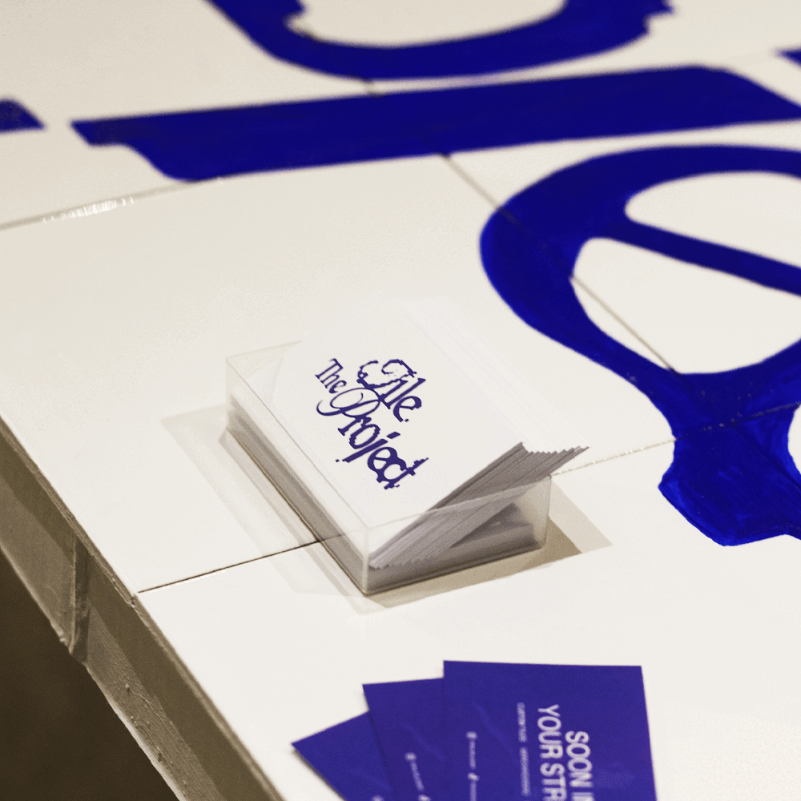
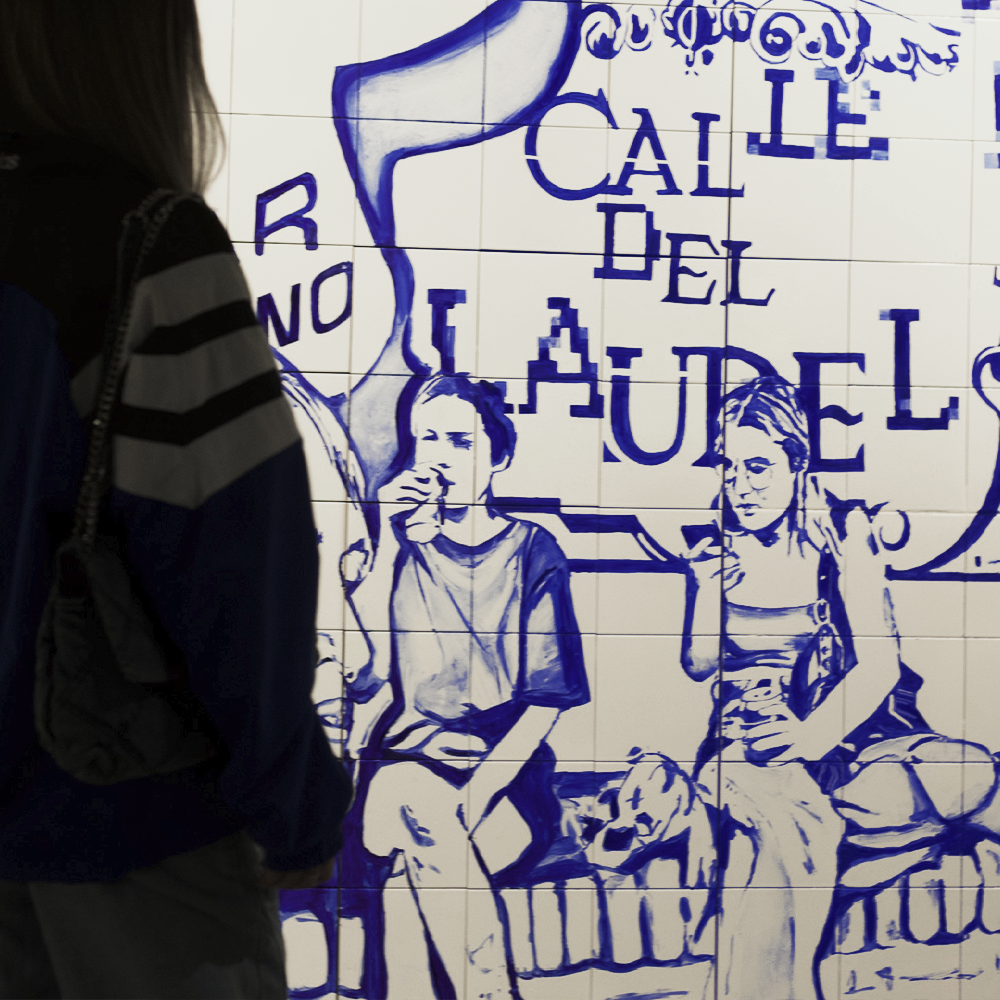
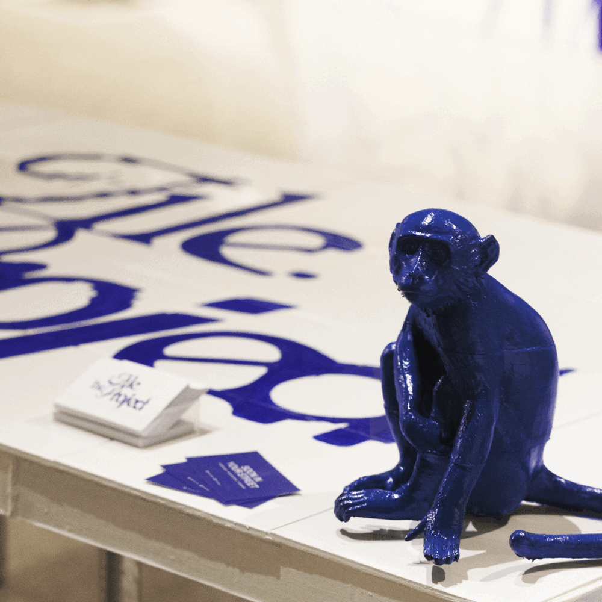

26001-09
- La gota de leche,
Logroño
- La gota de leche,
Logroño
Durante todo febrero de 2024, La Gota de Leche de Logroño se llenó de nuestra mirada sobre la ciudad y nuestras experiencias como colectivo. La calle Laurel, el bar El Embaucador o las fachadas más emblemáticas se entrelazaban con recuerdos compartidos, creando una narrativa visual única y sorprendente. La muestra incluía tres murales de gran formato (2,5 m x 2,5 m), mapas interactivos con los azulejos repartidos por el mundo, piezas audiovisuales en 3D y azulejos unitarios inspirados en la iconografía logroñesa. Cada obra invitaba a mirar de cerca, jugar con los detalles y descubrir nuevas conexiones entre lo local y lo personal.